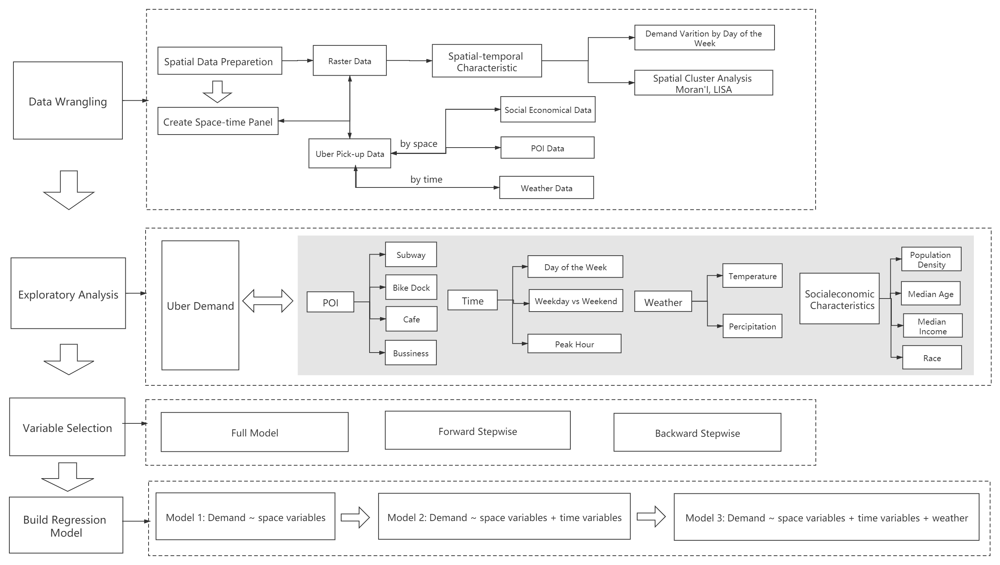
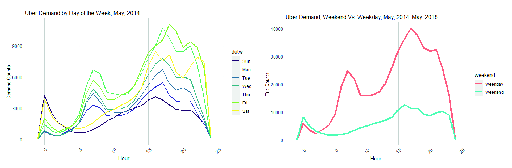
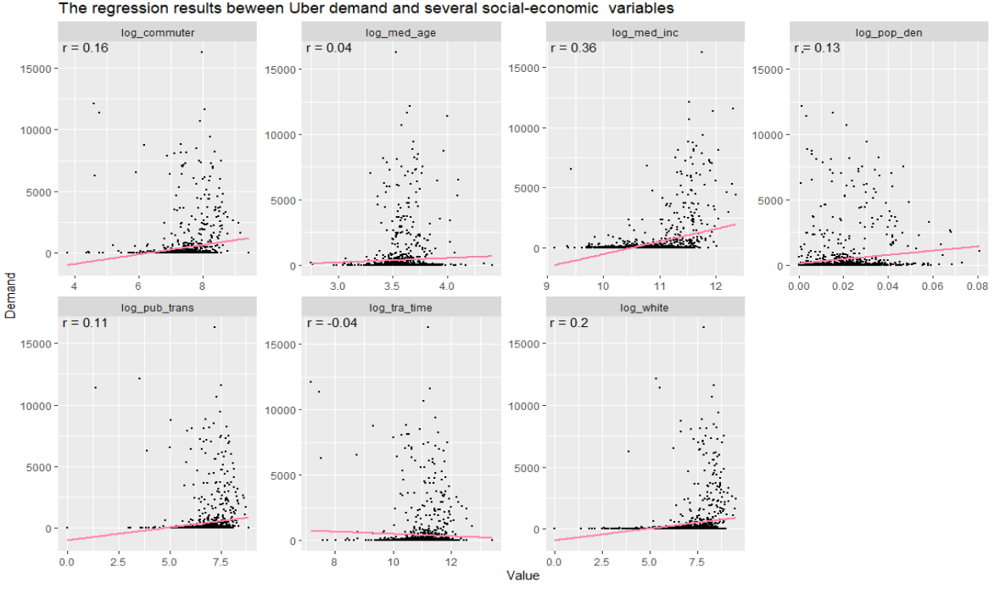
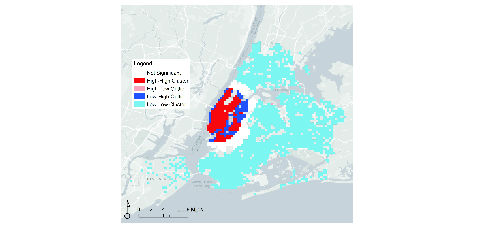

NYC Uber Demand Forecasting Based on Spatial-temporal Analysis
Rideshare (including TNCs such as Uber) has become an integral transportation mode in recent years and it is important for planners to understand the distribution and future demand of this mode. The project explores Uber’s demand distribution in NYC and forecasts its demand based on various socioeconomic, time, and weather-related variables.
Research Structure
Exploratory Analysis – Time
Exploratory Analysis - Weather

Exploratory Analysis – Social Economic Characteristic
Moran'I Analysis
Model Result

Slides